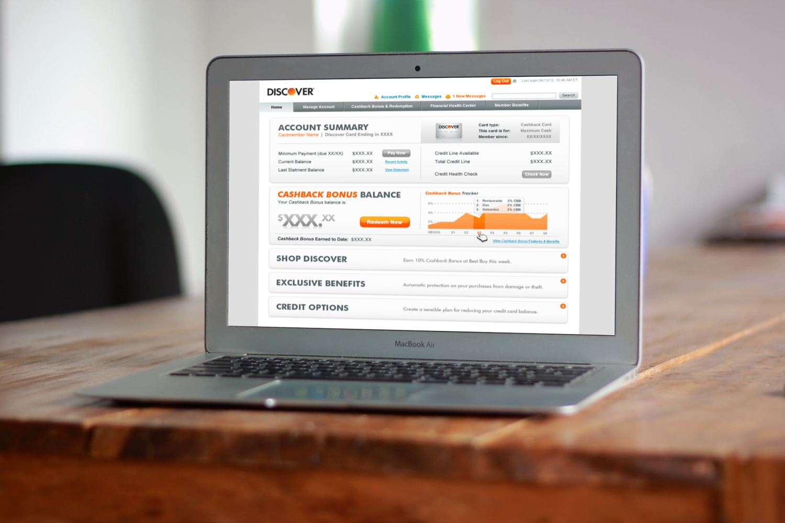
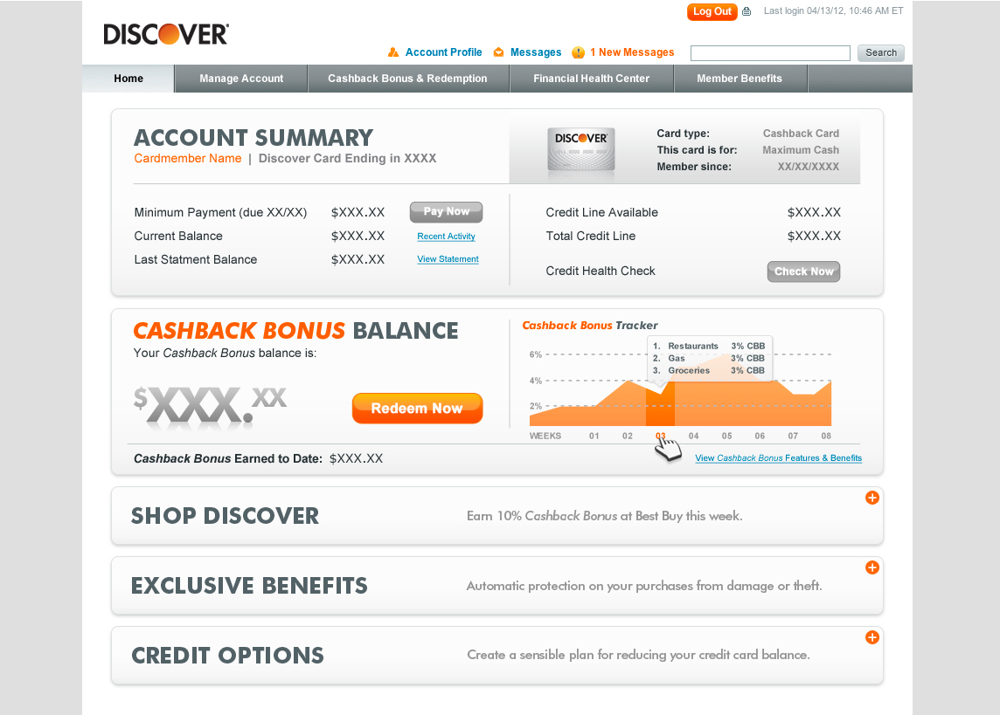
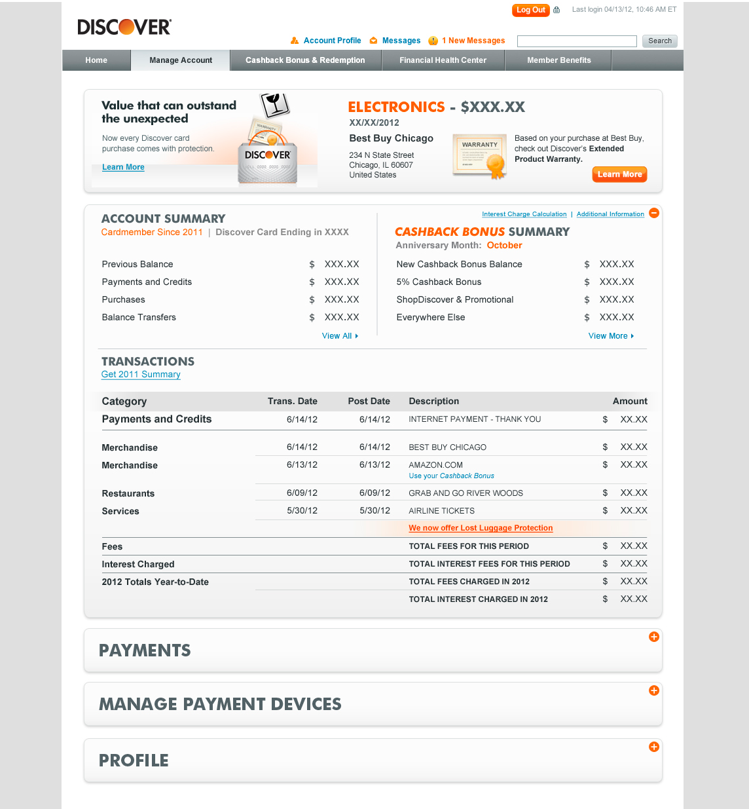
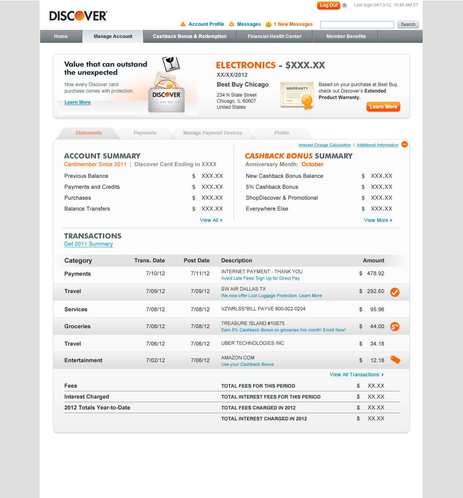
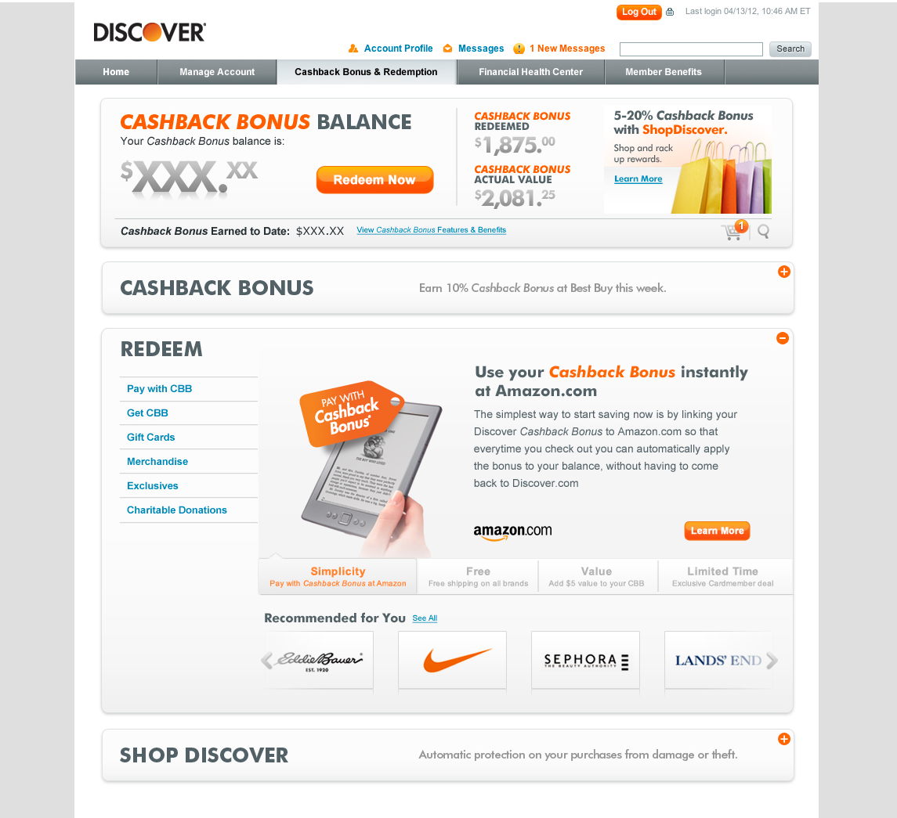
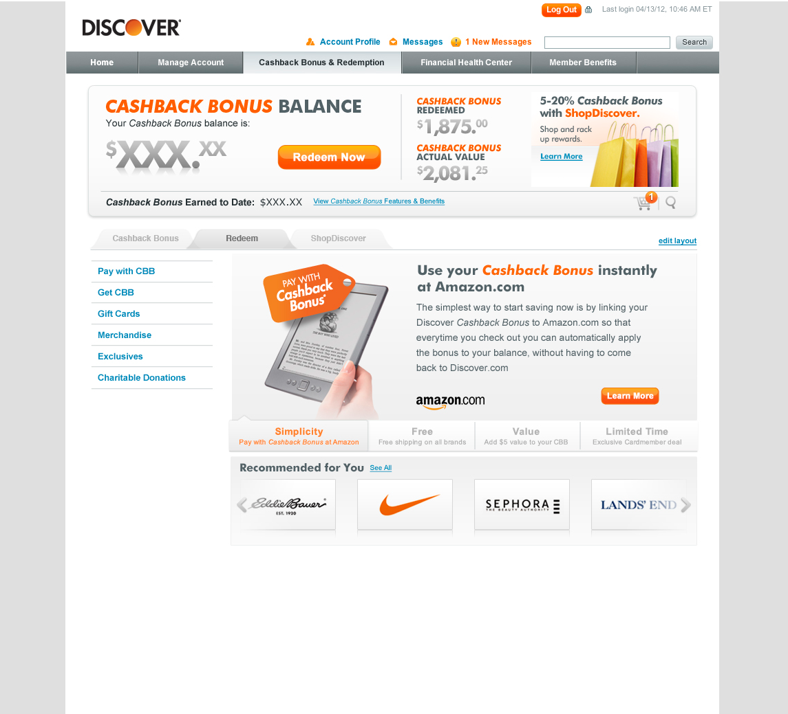

Discover Financial Services
Account Center Redesign Concepts & Multivariate Testing
The Assignment
One of many projects I worked on with Discover Financial Services is redesigning a major section of their core consumer experience - the Account Center experience. This is considered the transactional hub for all consumers through the digital channel. For this assignment we did a lot of design concepting and stakeholder whiteboard working sessions. Once we had a general direction defined we put several concepts through multi-variate testing.
This testing helped to identify the strongest concept but also where areas to refine the overall solution.
This testing helped to identify the strongest concept but also where areas to refine the overall solution.

Account Center Landing Page
This Account Center landing page redesign was focused on making the overall screen simpler and easy to digest and scan content.
Leveraging the idea of "Progressive Disclosure," main content areas are designed to be contained within bands that can open to revel more detailed content and areas of interaction.
This content organization also served the need to move into a responsive screen layout.
Leveraging the idea of "Progressive Disclosure," main content areas are designed to be contained within bands that can open to revel more detailed content and areas of interaction.
This content organization also served the need to move into a responsive screen layout.

Account Center - Expanded Payment Concept
In many of the open panels, a user has the ability to do quick high-level transactions right there in-line - without the need to move to another screen.
In this example, the user can quickly move through a 3-step payment process without leaving the screen.
In this example, the user can quickly move through a 3-step payment process without leaving the screen.


Manage Account (Multivariate Test - Bands vs Tabs)
The overall redesign effort included testing user testing of various layout concepts - two that surface was a concept called "Bands" and a more traditional "Tabs" layout. Within each of those broad concept categories, subtle variations inside each of the content container areas were tested as well.


Cashback Bonus & Redemption (Multivariate Test - Bands vs Tabs)
The overall redesign effort included testing user testing of various layout concepts - two that surface was a concept called "Bands" and a more traditional "Tabs" layout. Within each of those broad concept categories, subtle variations inside each of the content container areas were tested as well.


Business Benefits
-
Simplify the Account Center content and screens to make sure consumers are delighted when they come to the site.
-
Remove confusion and time on task for consumers when self servicing account thus driving positive sentiment to the brand experience.
-
Be seen as a future forward brand that cares about their customer's experience by quickly introducing new features that are thoughtful and well designed.
Process & Activities Overview
-
Rapid Design Lab working sessions with businesses stakeholder teams to define feature prioritization
-
Whiteboard (and sketch) concept directions and validation
-
High-level directional interaction designs and detailed visual design treatments for each concept in various states
-
Clickable prototype built with high fidelity screen designs
-
User testing with analysis and documented recommendations